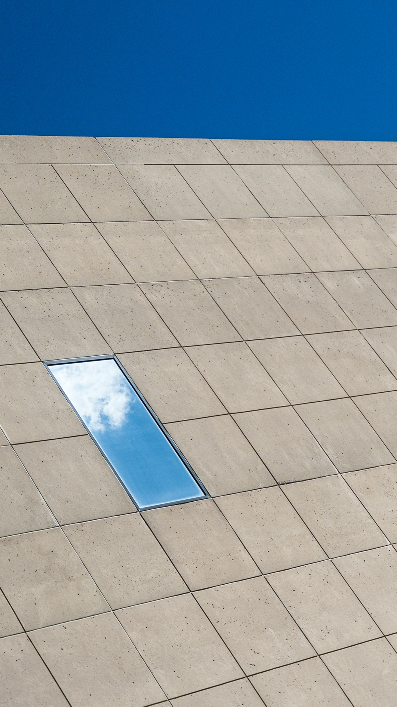

"The Sky Is Falling"
Digital Photography // 2017 // Bloomingtion, Indiana
This was made one weekend not long after I'd bought my first Leica. It was such an achievement for me that I'd take it out as often as I could. One weekend I took it up to Indiana University for a photo walk. This ended up being the first of many abstract architectural works I'd begin making over the next few years. Leave your comfort zone sometimes. It's not so bad to get distracted with the wrong equipment.